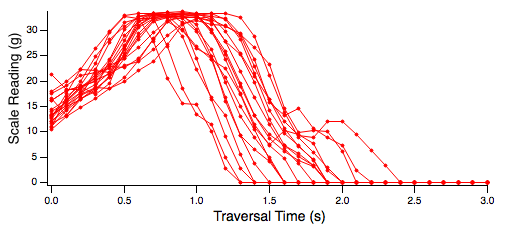
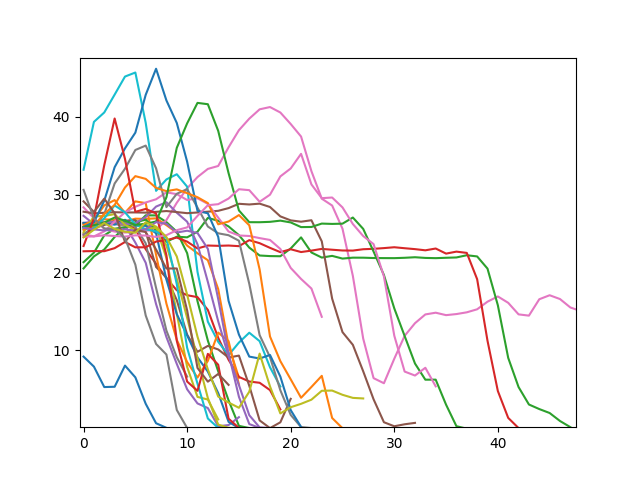
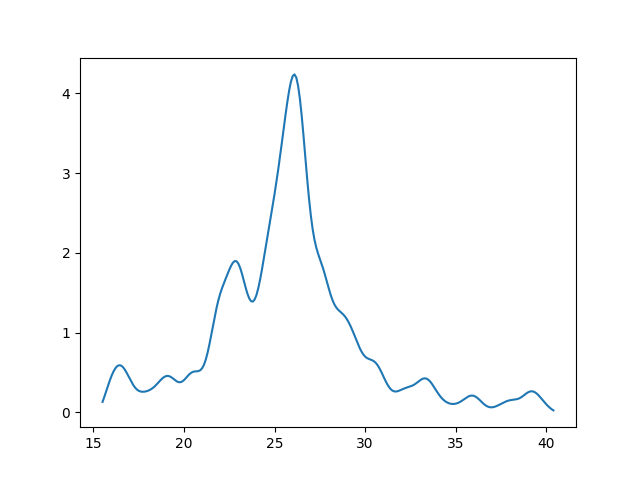

AutoMouseWeight is a Raspberry Pi Python program to automatically weigh and log weight data for individuals identified by RFID tags. It requires a load cell connected to an HX711 load cell amplifier, and an Innovations Design RFID tag reader (ID-3LA, ID-12LA, or ID-20LA). AutoMouseWeight was designed for mice, but it could be used for anything that can move and carry an RFID tag.
The basic setup of the electronics and hardware and the use of the system to log mice weights has been published: Automating mouse weighing in group homecages with Raspberry Pi micro-computers. Omid Noorshams Jamie D. Boyd, and Timothy H. Murphy: Journal of Neuroscience Methods, 2017 Jun 15;285:1-5. This is an improved version of the software used in the paper. There is a youTube movie demonstrating the electronics setup. The STL files included here were created by Omid Noorshams and are for 3D printing of a tunnel that rests on the load cell, related couplers, plus a holder for an ID-20LA. Their use is explained in the paper.
AutoMouseWeight uses the HX711 Python/C module from GPIO_Thread and RFIDTagReader.
To install the HX711 Python/Cmodule you will need the Python development library. The GPIO_Thread projects use the pulsedThread library so you will need to install this as well.
Install RFIDTagReader:
There are some settings that need to be configured before running the program. These used to be set in the Python file itself, but have been moved into a JSON styled text file. When the program is launched, it will look for a file named AMW_config.jsn in the current directory, and load the constants from there. If the file can not be loaded completely, a new set of constants will be created by querying the user, and these will be saved to AMW_config.jsn. A file named Copy_to_AMW_config.jsn contains a sample configuration file, which you can, as indicated, copy to AMW_config.jsn and manually edit. Don't edit Copy_to_AMW_config.jsn because if it is under GIT version control. You would lose your changes if you updated the program with git pull. The contents of AMW_config.jsn are:
| GPIO Data Pin | The GPIO pin which is connected to the data pin of the HX711 |
| GPIO Clock Pin | The GPIO pin which is connected to the clock pin of the HX711 |
| Grams per Unit | Scaling of the load cell, in grams per raw A/D unit. For our setup, this was 7.14e-05 |
| Serial Port | The serial port used for the tag reader. Usually 'serial0' |
| GPIO Tag in Range Pin | The GPIO pin which is connected to the Tag-In-Range pin of the Tag Reader. Note that the code as written only works with ID tag readers not RDM readers because of the reliance on the Tag-In-Range Pin to generate an interrupt. |
| Data Save Options | Set this to a bit-wise combination of kSAVE_DATA_LOCAL=1, to save data on the local machine, and kSAVE_DATA_REMOTE=2, to POST data to a remote server where it can be crucnhed and displayed on a web page as it is acquired. The server code is not ready yet, so unless you write it yourself, stick with kSAVE_DATA_LOCAL. |
| Cage Name | cage name will be included in the name of the data files printed by AutoMouseWeight |
| Data Path | The file path where data files from each day will be saved |
| Day Start Hour | The hour when a new file is created. Use 0 to start the file for each day at 12 midnight. Set to 7 to synch files to mouse day/night cycle. Set to 13 to do the file turnaround in the quiet of the afternoon |
| Email Weights | if true, and Data Save Options is set to kSAVE_DATA_LOCAL , results for each day will be emailed as described below |
| Email From Address | The account used to send the email |
| Email Password | Password for the account used to send the email. Stored in plain text, so maybe use a dedicated account |
| Email Recipients | list of email addresses to receive the emails |
| Email Server | Server used to send email, with port number, e.g., smtp.gmail.com:87 |
| Thread Array Size | size of array used for threaded reading from load cell amplifier. The HX711 reads at 10 Hz so 200 points will record for 20 seconds. Mice typically pass through the weighing chamber within this time |
| Minimum Weight | cut off weight where we stop the scale from reading once it has dipped below |
Upon being started, AutoMouseWeight tares the scale, and opens a binary data file named for cage name and date. The program then loops forever collecting weight data whenever a tag is read by the Tag Reader. The program will close the existing file and start a new data file every 24 hours, synched to the kDAYSTARTHOUR constant. It can run constantly for many days at a time.
The basic program flow is as follows. Whenever a tag is read by the tag reader, the program records the tag ID number and the time, and starts the scale collecting weight data as fast as it can. This is done on a separate thread from the main program in C module. The scale keeps reading weights into the array until the array is full, or until the tag goes out of range and the scale reads leads than kMINWEIGHT, or until a different tag is read by the tag reader. The tag ID and the time stamp are then printed to the data file, followed by the contents of the data array up to the point where the scale was stopped.
The collection of data can be interrupted with ctrl-c. This brings up the ScaleRunner function which presents a text based menu with the following options:
AutoMouseWeight Data files for each day are named with kCAGE_NAME_4 Digit year_2 Digit Month_2 Digit Day, e.g., cage1_2017_06_04, and are saved in the location specified by kCAGE_PATH. Data files are in binary 32 bit floating point format. Weight data is written to the file as grams. Each run of weight data is prefaced by the last 6 digits of the RFID code, as a negative value to make it easy for analysis code to find the start of each run, and the time in seconds since the start of the day, as set by the kDAYSTARTHOUR constant. Only the last 6 digits of the RFID code are written because that is the limit of the precision of a 32 bit floating point value. In practice, this limit has not proved to be a problem.
| -50610 | last 6 digits of RFID code |
| 1496304640 | seconds since start of day |
| 12.725607 | 1st weight reading |
| 17.459797 | 2nd weight reading |
| 22.18738 | 3rd weight reading |
| 22.010483 | 4th weight reading |
| 21.706848 | 5th weight readin |
| 26.368086 | 6th weight reading |
| 31.028961 | 7th weight reading |
| 32.730495 | 8th weight reading |
| 33.041756 | 9th weight reading |
| 33.286957 | 10th weight reading |
| . | |
| . | |
| . | |
| 24.153572 | 5th from last weight reading |
| 17.559387 | 4th from last weight reading |
| 11.345419 | 3rd from last weight reading |
| 7.2594399 | 2nd from last weight reading |
| 4.7857132 | last weight reading |
As the mouse moves across the platform, weight values start out low, rapidly reach a plateau, and then drop quickly as the mouse leaves the platform on the other side. 20 runs of data from the same mouse all from the same day are shown below. The plateau, easily seen when multiple runs are plotted together, corresponds to the actual weight of the mouse.

A second Python script, OneDayWeights.py, is included with AutoMouseWeight. It can be run seprately to analyze the data files produced by AutoMouseWeight, or if kSAVE_DATA_LOCAL is set in kSAVE_DATA, the get_day_weights function is imported from OneDayWeights.py and is run at the end of every day. The get_day_weights function uses the numpy library:
sudo apt-get install python3-numpy
If running OneDayWeights stand alone, you may wish to set the option to display plots of the data. This is done with matplotlib:
The get_day_weights function is called like this:
get_day_weights (folder_path, cageName, date_year, date_month, date_day, output_path, doPlots, sendMail)
The analysis used in OneDayWeights.py is quite simple, based on finding the most commonly ocurring weight for each mouse. For each day, weights for each mouse is copied into a numpy array. Weights below a minimum threshold (set by the constant kMIN_WEIGHT) or above a maximum threshold (set by the constant kMAX_WEIGHT) are excluded. A cumulative histogram of the weight data is made, using the bin size set by the constant kHIST_BINSIZE. The derivative of the histogram is taken, and smoothed with kN_SMOOTH passes of a Gaussian kernel of kKERNEL_WIDTH. The center of the histogram bin containing the maximum value of the smoothed derivative is returned as the result. The data for each day is saved in the folder specified by output_path, in a text file named cageName + '_weights_' + 4 Digit year_2 Digit Month_2 Digit Day + '.txt' Sample output is:
| mouse | entries | weight |
| m00026 | 1 | 24.9 |
| m90629 | 12 | 24.6 |
| m90647 | 3 | 28.2 |
| m90716 | 10 | 24.6 |
| m90797 | 3 | 26.1 |
| m90882 | 14 | 23.1 |
| m90964 | 4 | 26.4 |
| m90969 | 4 | 28.1 |
| m91183 | 29 | 26.2 |
If the Pi recording weights is online, email containing the results for each day can be sent to to interested parties. Constants used for emailing weights are set from the AMW_config.jsn file. Fill these in before running the program. Note that the email password is saved as clear text, not encoded. You can make a separate gmail account for your AutoMouseWeight. The emailing code could be improved by comparing each mouse's weight to a baseline weight, and sending an email alert only if the current weight had decreased by some set percentage from baseline.
When run as a stand alone script, OneDayWeights.py repeatedly querries the user for a year, month, and date, and runs the get_day_weights function with other arguments set from constants in OneDayWeights.py:
Matplotlib plots of the data from one day from one mouse are shown here, followed by a plot of the smoothed derivative of the histogram of all the weights, from which the position of the peak was extracted for the recorded weight. A particularly noisy example was selected to show that, with enough traversals across the weighing platform, a reliable peak can be extracted even from noisy data.  